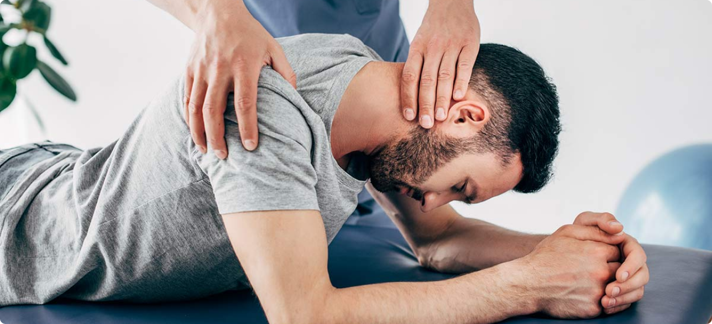

L'ostéopathie est une pratique thérapeutique manuelle née vers 1870 aux États-Unis grâce au médecin Andrew Taylor Still. Introduite en France dans les années 50, elle a vu son succès grandir au fil des ans et est aujourd'hui une thérapie reconnue. Elle a été réglementée par la loi du 4 mars 2002 relative aux droits des patients et à la qualité du système de santé.
💡 À savoir : Seuls les praticiens titulaires d'un diplôme délivré par un organisme agréé par le Ministère de la Santé peuvent exercer l'ostéopathie.
Les principes de l'ostéopathie
L'ostéopathie obtient ses résultats grâce à une intervention uniquement manuelle. La caractéristique de cette thérapie, dont l'efficacité n'est plus à prouver, est de s'intéresser au corps humain comme un tout et de traiter la cause des troubles en respectant la relation entre le corps du patient et sa pensée, son psychisme. Un esprit sain dans un corps sain !

Déroulement d'une séance
Une séance chez l'ostéopathe dure entre 40 et 60 minutes et se divise en trois étapes clés :
1. Anamnèse complète
L'ostéopathe commence par un questionnement détaillé du patient :
- Raison de la consultation : Pourquoi le patient est-il venu ?
- Antécédents médicaux : Opérations, maladies, traumatismes, etc.
- Traitements en cours : Médicaments, suivi médical, etc.
2. Tests médicaux et ostéopathiques
L'ostéopathe réalise une série de tests pour confirmer que la pathologie peut être traitée par l'ostéopathie.
Si ce n'est pas le cas, il orientera le patient vers le professionnel de santé approprié.
Exemples de tests réalisés :
- Tests médicaux ou tests d'exclusion.
- Tests statiques et dynamiques posturaux.
- Tests ostéopathiques pour établir un diagnostic précis.
3. Traitement ostéopathique
L'ostéopathe utilise des techniques dites douces, adaptées à chaque patient, et basées sur les besoins spécifiques identifiés :
- Techniques structurelles et articulaires.
- Techniques faciales, musculaires et crâniennes.
- Techniques viscérales.
Chaque traitement est personnalisé et sans douleur.
L'ostéopathe peut également donner des conseils, tels que :
- Étirements et échauffements.
- Sports et exercices adaptés.
- Conseils diététiques pour un rétablissement optimal..